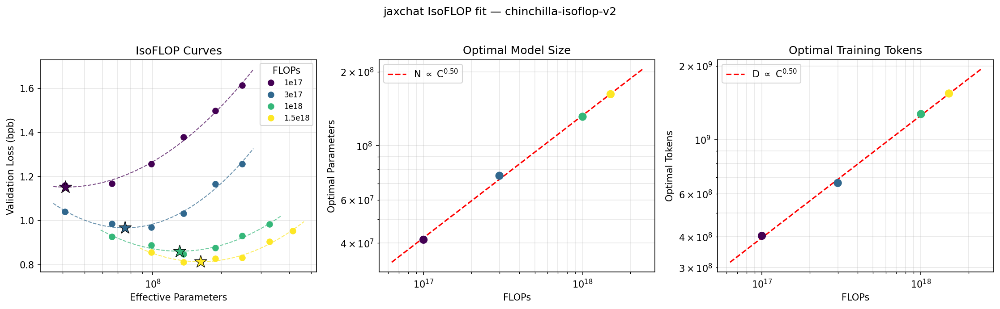
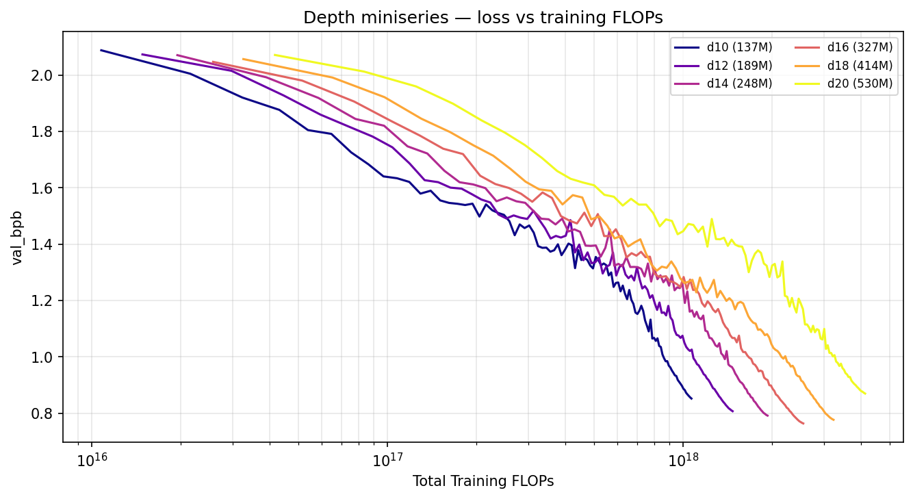
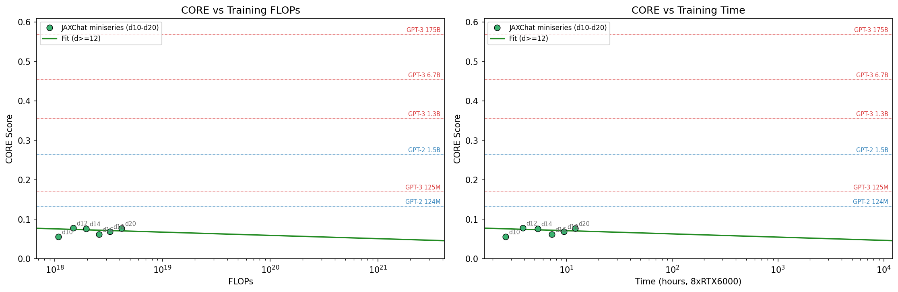

Scaling Laws for jaxchat: a Chinchilla IsoFLOP Sweep on One Node
Before you pick a model size you should know the shape of the curve you are climbing. I ran a Chinchilla-style IsoFLOP sweep end to end on one 8x RTX 6000 node, recovered the textbook compute-optimal exponents, and placed a from-scratch JAX stack on the CORE-versus-compute trend against GPT-2 and GPT-3.
jaxchat is an end-to-end LLM training pipeline written from scratch in JAX, inspired by Karpathy's nanochat[4][4] Andrej Karpathy. “nanochat.” 2025. github.com/karpathy/nanochat ↗: tokenizer, pretraining, midtraining, SFT, RL with GRPO, and inference, ending in a web UI you can actually chat with. One repo, one 8x RTX 6000 node, the whole stack. This post is about the part that comes before any of that pays off: how big a model should you train, and on how many tokens, for a fixed amount of compute.
That question has a known shape. Kaplan et al.[1][1] Kaplan et al. “Scaling Laws for Neural Language Models.” 2020. arXiv:2001.08361 ↗ showed loss falls as a power law in model size, data, and compute; Hoffmann et al. (Chinchilla)[2][2] Hoffmann et al. “Training Compute-Optimal Large Language Models” (Chinchilla). 2022. arXiv:2203.15556 ↗ sharpened it into a compute-optimal recipe where parameters and tokens should grow together, roughly as the square root of compute each. Lilian Weng's scaling-laws note[3][3] Lilian Weng. “Scaling Laws.” 2026. lilianweng.github.io ↗ is the cleanest single walk through the modern version of this story. None of that tells you whether your own training stack is on the curve. The only way to know is to fit the laws on your own runs, so that is what I did.
Thirty runs, four budgets, one node
An IsoFLOP study sweeps model size at each fixed compute budget, then reads the optimum off the bottom of each curve.
The IsoFLOP design is simple. Pick a set of compute budgets. At each budget, train a range of model sizes for exactly that many FLOPs, so a smaller model sees more tokens and a larger model sees fewer. Plot validation loss against model size and you get a U-shaped curve per budget: too small underfits, too large is undertrained, and the bottom is the compute-optimal size for that budget. I used four budgets, C in {1e17, 3e17, 1e18, 1.5e18} FLOPs, and trained a depth range at each, for 30 runs in total on a single 8x RTX 6000 Ada node. Every run is the same 124m-modern preset, so the only thing that changes within a budget is width and depth, with d_model = depth times 64.
For each budget I fit a parabola in log10(N) to the validation loss, read off the minimum as the compute-optimal size N*, and set the matching token count from the compute identity D* = C / (6 N*). Four budgets give four (N*, D*) points, and the scaling exponents are the slopes of those points in log space.
Textbook Chinchilla exponents
Both compute-optimal size and tokens scale as C to the 0.50, matching Hoffmann et al.
The four IsoFLOP curves are clean parabolas, and their minima march to the right as the budget grows: more compute wants a bigger model and more tokens, in step. Fitting power laws across the four budgets gives the headline:
N* ∝ C0.50 and D* ∝ C0.50, textbook Chinchilla. Hoffmann et al. report 0.49 and 0.51.
The square-root law on both axes is the whole point of Chinchilla: when you get more compute, you should spend it about evenly on a bigger model and on more tokens, not pour it all into size. Recovering 0.50 on both axes from a from-scratch JAX stack, on one node, says the training loop and the FLOP accounting are honest.

N* ∝ C0.50 and D* ∝ C0.50, the textbook Chinchilla slopes.A depth miniseries, and the family's best model
Across d10 to d20, depth 16 at 327M parameters reaches the family's best validation bits per byte of 0.7626.
The IsoFLOP fit tells you the optimum but not what a real training curve looks like at each size, so I also ran a depth miniseries: six models from d10 to d20, 137M to 530M parameters, each trained on 1.31B tokens of FineWeb. Plotting validation bits per byte against total training FLOPs shows the expected ordering. At any fixed FLOP budget the shallower models are ahead, since they have done more passes per parameter, and each deeper model overtakes only once it has been given enough compute. The lowest point of the whole family belongs to depth 16 at 327M parameters, with a validation bits per byte of 0.7626.

Where the family sits against GPT-2 and GPT-3
On a chance-centered four-task CORE the miniseries sits below the GPT-2 124M reference, with a roughly flat fit at this scale.
Loss is internal; to compare against other models you need a downstream eval. I scored each miniseries checkpoint on a chance-centered four-task CORE suite (ARC-Easy, ARC-Challenge, HellaSwag, PIQA) and plotted CORE against both training FLOPs and wall-clock training time, with the GPT-2 and GPT-3 reference scores drawn in as horizontal lines on the same metric. The honest picture is that the whole family lands around 0.05 to 0.08, below even the GPT-2 124M and GPT-3 125M reference lines, and the fit over the d≥12 models is roughly flat. That is expected, not disappointing: these are 137M to 530M models trained on about 1.3B tokens, deep in the data-limited regime, and the chance-centered four-task score is a demanding metric at this size. The figure puts the family on the same axes as the references and reports the wall clock, which is only a few hours per model.

What I carry forward. (1) The stack is on the curve: a from-scratch JAX training loop recovers C0.50 on both Chinchilla axes. (2) Compute-optimal means growing model and tokens together, not just adding parameters. (3) At a fixed budget the shallower model wins, but depth 16 is the family's best once each model has its compute, at val_bpb 0.7626. (4) On a chance-centered four-task CORE the family is still below GPT-2 124M, which is exactly what 137M to 530M models on about 1.3B tokens should do.
Code and the full stack
The sweep driver, the fit script, and the whole end-to-end pipeline are in one repo.
The IsoFLOP sweep, the depth miniseries, the parabola and power-law fits, and the rest of the end-to-end pipeline (tokenizer, pretraining, midtraining, SFT, GRPO, inference, and a chat UI) are all in one repository. The sweep reproduces with runs/rtx_8gpu_chinchilla_isoflop.sh and the fits and plots with scripts/fit_chinchilla.py.
github.com/ibusnowden/jaxchat ↗
An end-to-end LLM training pipeline written from scratch in JAX, inspired by Karpathy's nanochat. One repo, one 8x RTX 6000 node, the whole stack. References are linked inline and listed at the foot of this post.